In 2013, a few Charlotte families came together around a shared love for traditional Maharashtrian percussion. What started as an eight-member circle has blossomed into Shivasya Dhol Tasha Pathak of the Carolinas — an active cultural troupe of over 80 performers and community volunteers.
Music is our heartbeat, but service is our foundation. We celebrate and share the historic traditions of dhol, tasha, and lezim while actively giving back through humanitarian outreach. Through rhythm, mentorship, and seva, we empower the next generation to honor their heritage and make a positive impact in our community.
Shivasya is a registered 501(c)(3) nonprofit, so contributions are tax-deductible.
A Place for Everyone
No prior experience is needed; just enthusiasm and a desire to learn. We welcome members of all ages, backgrounds, and walks of life. Whether you want to drum, dance, carry traditional honors, or support behind the scenes, there is a role for you.
The roles you can play:
Shivasya's story began in 2013, founded by Pramod Holé alongside Shantanu Wadodkar, Kedar Hinge, Dajiba Patil, Sachin Varule, and Poonam Kulkarni, with Nitu Patil leading the Lezim initiative. In the seasons that followed, leaders such as Pratapsinh Patil, Supriya Bhor, Mahesh Bhor, Jeet Hiremath, Jayesh Mohite, and Bhupesh Patki stepped up to build and nurture our community.
Today, we are proud to be 80+ members strong and still growing. We hold rehearsals twice a week, meeting Tuesdays and Thursdays from 7:00 to 8:30 PM, May through October, at the Hindu Center of Charlotte.
Shivasya is the work of many hands. It began with a few families in 2013 and has been carried forward by leaders who give their time year after year.
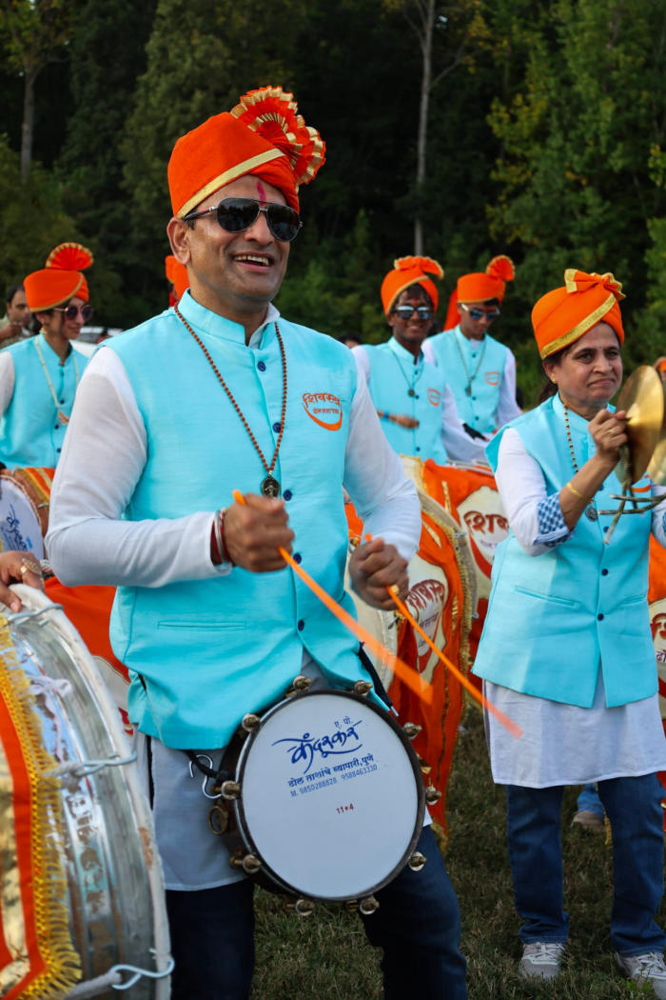
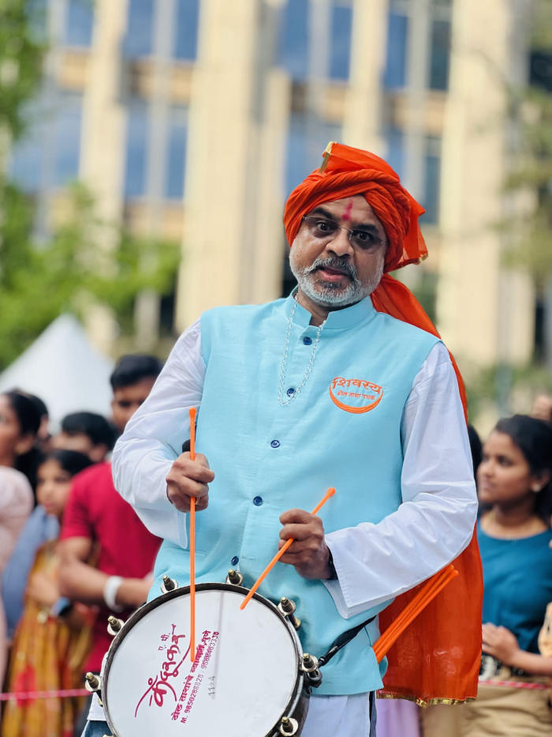
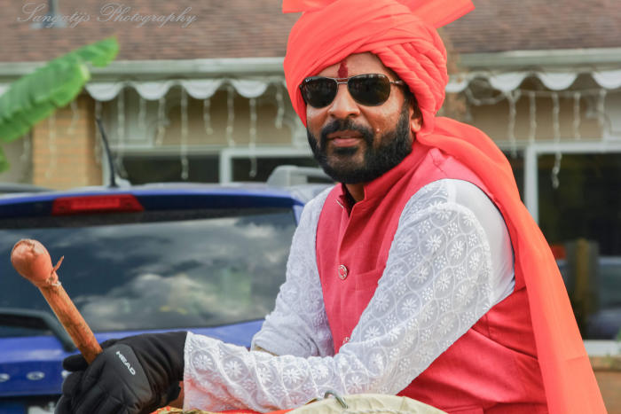
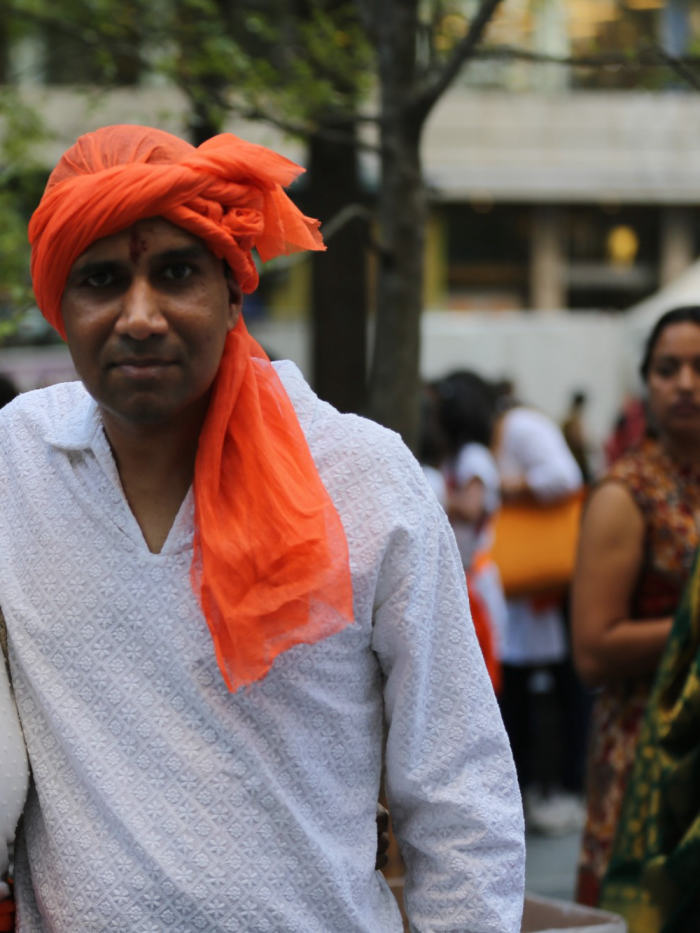
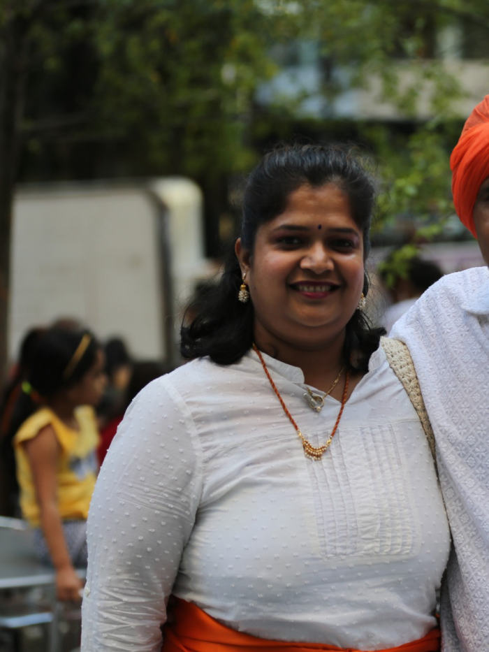
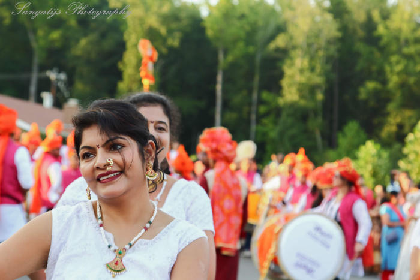
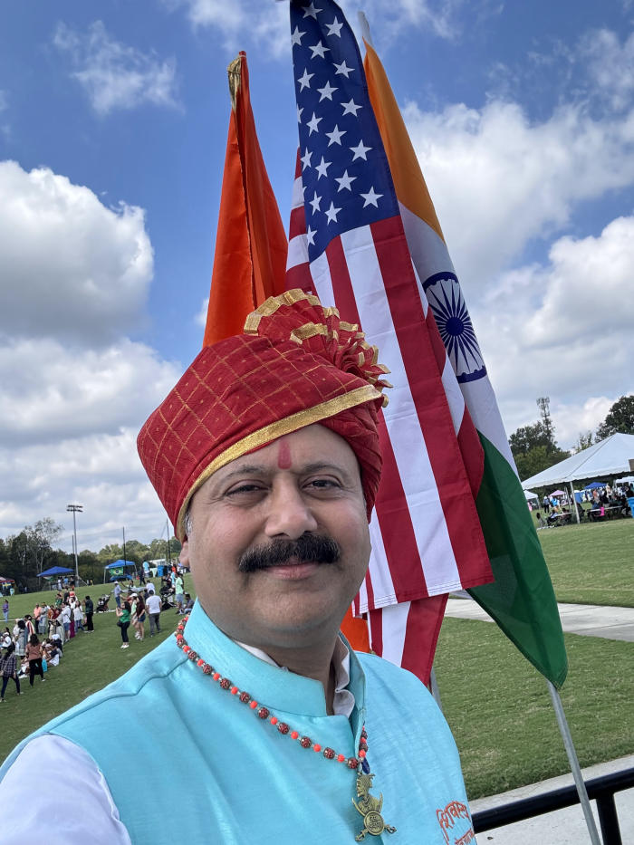
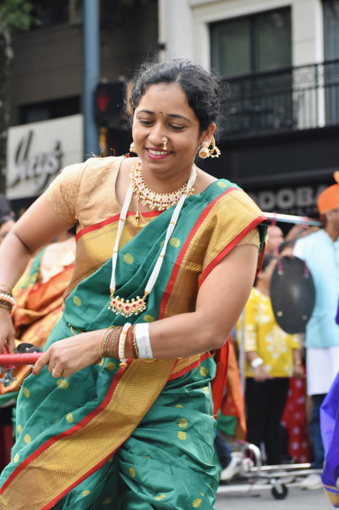
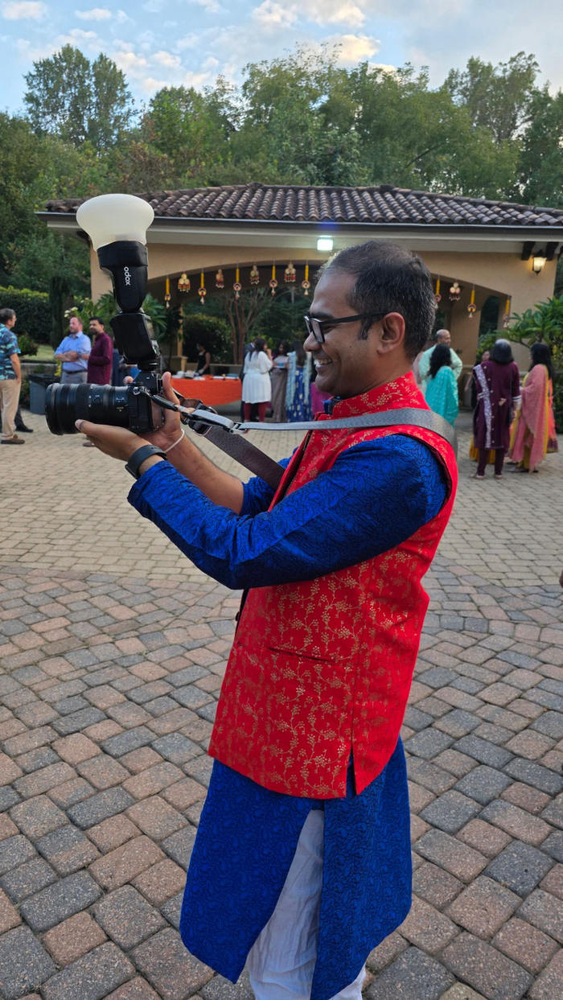
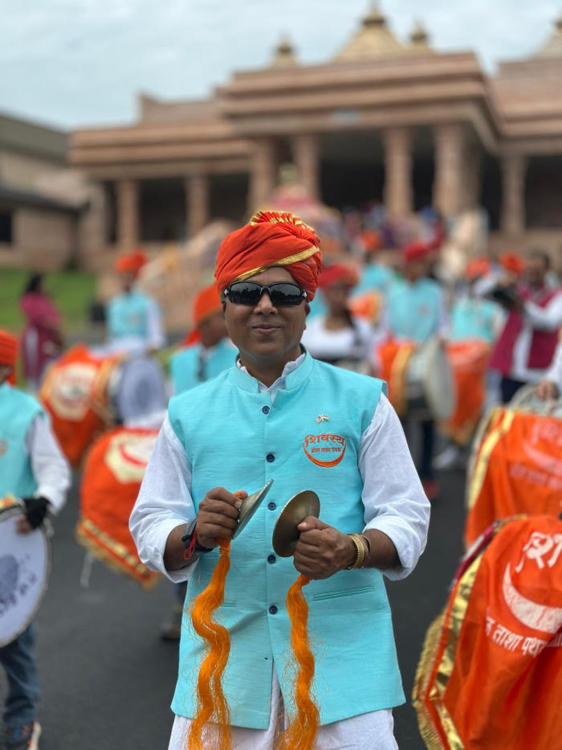
The sound of Shivasya comes from a handful of traditional Maharashtrian instruments, each with its own voice in the ensemble.
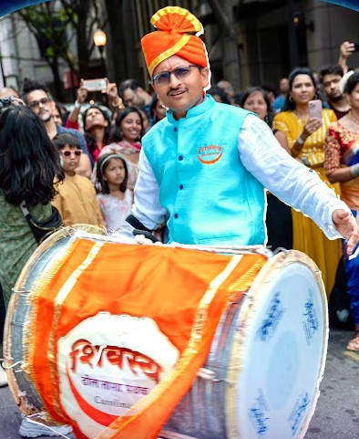
In Maharashtra, a dhol is a large, cylindrical, double-headed barrel drum played with wooden sticks to create the deep bass that drives cultural festivals.
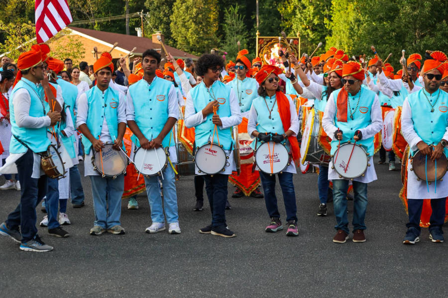
The tasha is a shallow, single-headed kettle drum — a metal bowl covered with a taut head — played with two thin, flexible sticks for a sharp, high-pitched, cutting sound, much like a snare drum.
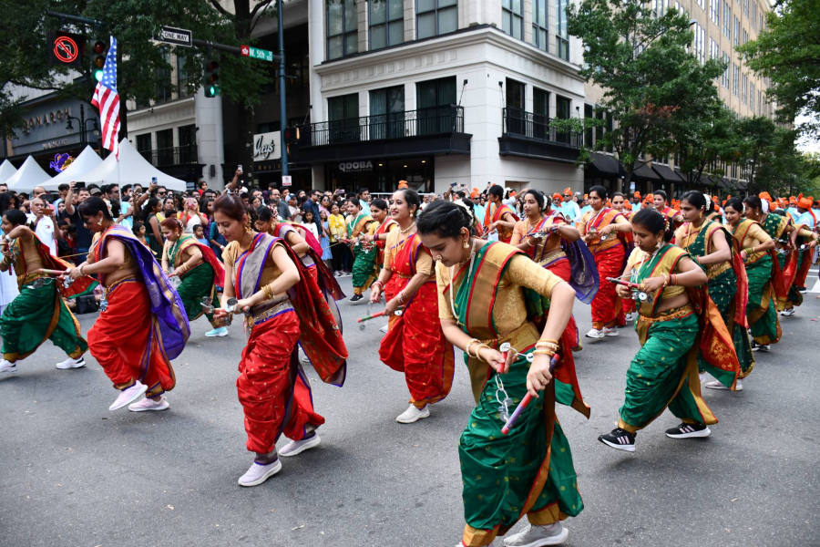
The lezim is a traditional Maharashtrian jingling dance-rattle — a wooden frame strung with metal discs that clash rhythmically as it is shaken, pairing sound with energetic dance.
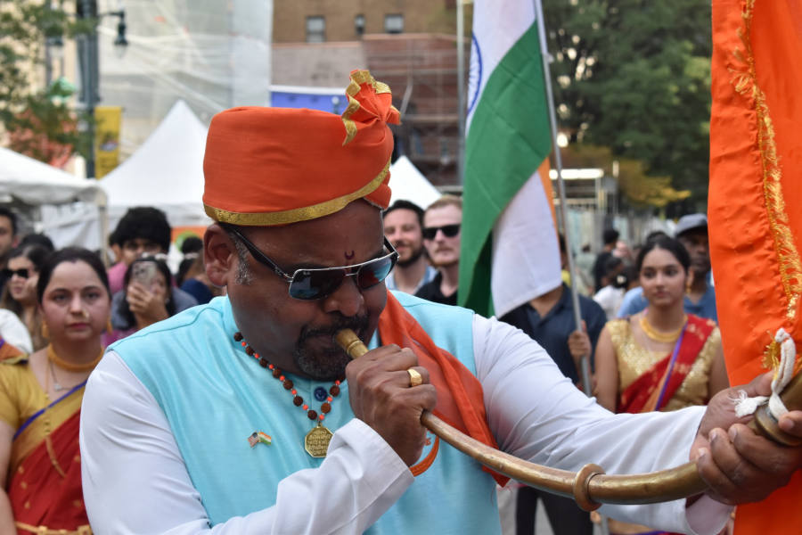
The tutari is a crescent-shaped brass trumpet with a loud, piercing, resonant call. Once used to announce royal arrivals and battles, today it welcomes guests and heralds the start of a performance.
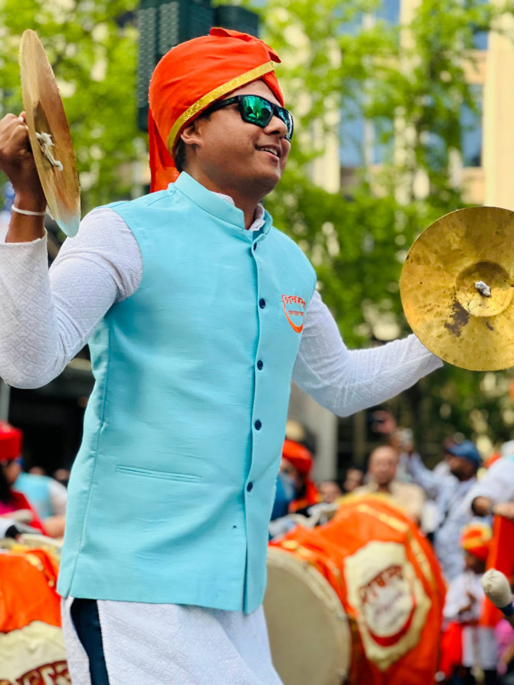
The zanj are large brass hand cymbals with a deep central dome, held by cloth cords and struck flat against one another for a sharp metallic crash that cuts through the drums. Smaller versions used in bhajans are known as taal or manjira.
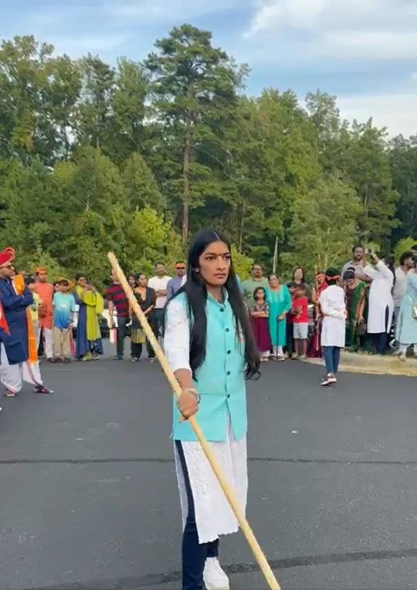
Lathi Kathi is a traditional stick-fighting martial art native to Maharashtra — lathi is a long, sturdy wooden or bamboo staff and kathi means stick. Tied to the historic martial tradition of Mardani Khel, it swings a 6-to-8-foot staff in rapid, fluid motions that simulate sword work for attack and defense.